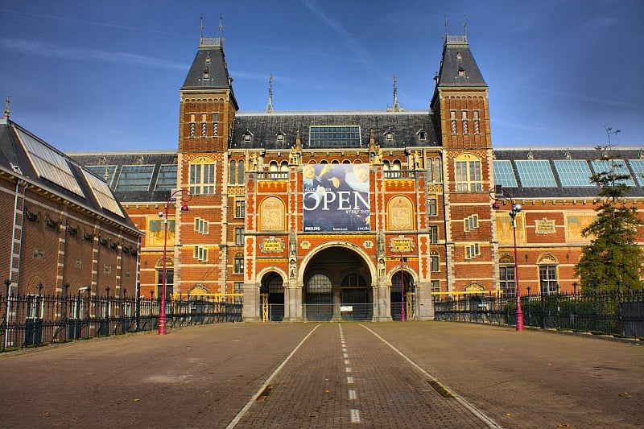

Pontos Turísticos
Torre Eiffel - França

A Torre Eiffel é um ponto turístico obrigatório em Paris, França. A sua construção foi em 1889 para celebrar os 100 anos da Revolução Francesa, e tem 325 metros de altura e 1.665 degraus.
Além de uma vista incrível que pode ser apreciada de diferentes maneiras, há vários restaurantes em torno da Torre Eiffel para aproveitar a culinária do país.
Devido à espera de pelo menos duas horas para conhecer a Torre, recomendamos comprar a entrada com antecedência.
Atenas - Grécia

Atenas é um ponto turístico que tem o seu destaque por ter vários lugares arquitetônicos, como o Museu da Acrópole que possui um acervo de achados arqueológicos e esculturas dedicadas ao culto de Atena e Ártemis.
Outro lugar que também é dedicado à deusa grega Atena é o templo Partenon, construído no século V a.C.
E não podemos deixar de mencionar o Templo de Zeus Olímpico, que é a ruína monumental de um antigo templo dedicado a Zeus.
Coliseu de Roma - Itália

O Coliseu de Roma ou Anfiteatro Flaviano é um dos principais pontos turísticos da Itália e um dos monumentos mais famosos do mundo.
Com uma construção que se iniciou no ano de 72 d.C e serviu como palco para gladiadores que lutavam entre si, ele atrai pelo menos 4 milhões de turistas todos os anos.
O Coliseu de Roma tinha capacidade para 70 mil pessoas e oferecia espetáculos para distrair a população.
Devido à quantidade de turistas que costumam visitar o local, recomendamos que garanta o seu ingresso para o Coliseu com antecedência e evite filas.
Torre Big Ben - Inglaterra

O Big Ben é um dos pontos turísticos da Europa mais famosos da Inglaterra, em Londres, pois todos fazem referência ao famoso relógio localizado na Torre Elizabeth, com aproximadamente 13 toneladas.
Ele fica instalado no Parlamento Inglês, onde é possível fazer uma visita às divisões do Parlamento gratuitamente.
Além disso, também é possível fazer um passeio guiado pelo interior do Big Ben para conhecer a sua história e a importância dele para o país.
Sagrada Família - Espanha

A Sagrada Família de Barcelona, Espanha, foi construída pelo famoso arquiteto Antoni Gaudì. Ela é uma igreja com enorme quantidade de detalhes que ainda não foi finalizada.
A igreja está em construção há 135 anos e deve ficar pronta em 2026. Entretanto, é possível visitá-la e conhecer o seu interior.
Museumplein - Holanda

O Museumplein ou Praça dos Museus é um ponto turístico que não pode ficar de fora da nossa lista.
Os museus maiores e mais famosos de Amsterdã estão na Praça dos Museus, como Museu Rijksmuseum, Museu Van Gogh e Museu Stedelijk.
Torre de Belém - Portugal

A Torre de Belém é um dos pontos turísticos da Europa mais visitados e um dos principais de Portugal.
Ela foi construída entre 1514 e 1520, época das navegações, e tinha como objetivo proteger a cidade de invasores.
Em 1983, a Torre de Belém recebeu o título de Patrimônio da Humanidade pela UNESCO.